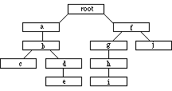
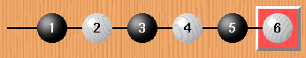
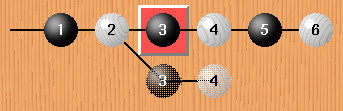
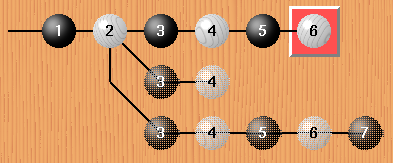
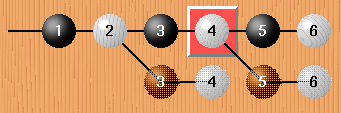
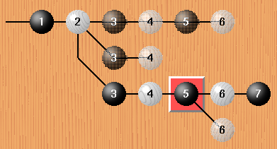

![[SGF FF[4] - Smart Game Format]](head.gif) 最后更新: 2003-10-10(原文last updated: 1999-1-7)
最后更新: 2003-10-10(原文last updated: 1999-1-7)
| 算法 | 示范图 | 前序遍历 |
WriteTree(Root)
End
WriteTree(Node)
Write(Node)
for each child of Node
WriteTree(child)
end for
end
|  | root a b c d e f g h i j |
| SGF | ||
(;FF[4]C[root](;C[a];C[b](;C[c]) (;C[d];C[e])) (;C[f](;C[g];C[h];C[i]) (;C[j]))) |
请对照 SGF 示例文件 和 用户指南 再次阅读 EBNF 定义来了解更多的细节，例如有关注释和分支队问题。最新的属性: ST, C, N。
下面是一些例子，来帮助你理解 EBNF 定义及其在分支上的应用。
图片来自于 cgoban
| 无分支 |  |
(;FF[4]GM[1]SZ[19];B[aa];W[bb];B[cc];W[dd];B[ad];W[bd]) | |
| 在第3手有1个分支 |  |
(;FF[4]GM[1]SZ[19];B[aa];W[bb](;B[cc];W[dd];B[ad];W[bd]) (;B[hh];W[hg])) | |
| 注意新的对局树的起点位于节点B[cc]之前，分支本身在第二行。 末尾有两个 ")" ，一个是分支的结尾，另一个是从FF[4]开始的主干的结尾。 | |
| 在第3手有2个分支 |  |
(;FF[4]GM[1]SZ[19];B[aa];W[bb](;B[cc]N[Var A];W[dd];B[ad];W[bd]) (;B[hh]N[Var B];W[hg]) (;B[gg]N[Var C];W[gh];B[hh];W[hg];B[kk])) | |
| 通常主干杯标记为分支 "A" ，第一个分支为分支 "B"，第二个分支为分支 "C" 等等。这就是为什么许多注释提到的下一手称作 "A" 的原因。 | |
| 在不同位置的2个分支 |  |
(;FF[4]GM[1]SZ[19];B[aa];W[bb](;B[cc];W[dd](;B[ad];W[bd]) (;B[ee];W[ff])) (;B[hh];W[hg])) | |
| 新的对局树的起点位于节点B[ad]之前。第二个分支（第二行）位于第一个分支（第三行）前。 再看看括号的对应关系。 | |
| 分支上的分支 |  |
(;FF[4]GM[1]SZ[19];B[aa];W[bb](;B[cc]N[Var A];W[dd];B[ad];W[bd]) (;B[hh]N[Var B];W[hg]) (;B[gg]N[Var C];W[gh];B[hh] (;W[hg]N[Var A];B[kk]) (;W[kl]N[Var B]))) | |
| 新的对局树的起点位于节点W[hg]之前。注意末尾有三个 ")" ，一个是分支W[kl]的结尾，一个是分支B[gg]的结尾，一个是主干的结尾。 |
属性是节点的一部分，因此 (W[tt]) 是错误的。 正确的表示方式是 (;W[tt])
属性不能出现在对局树的外部！例如 (;)W[tt] 是错误的。